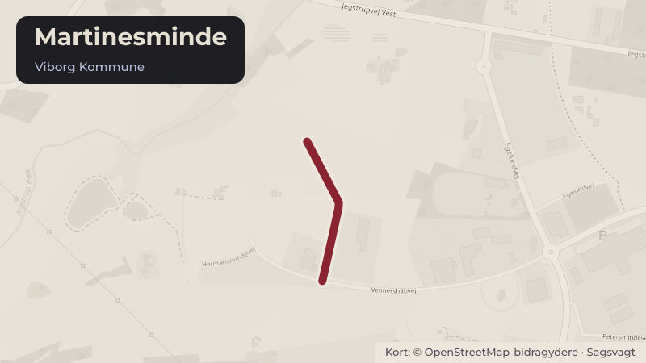

Besluttet 7. oktober, Byrådet, Viborg
Udflytning af Revas' affaldsaktiviteter til Martinesminde - fase 2 (bevillingssag)
Byrådet har i forbindelse med vedtagelsen af budget 2026-2029 afsat midler til gennemførelse af fase 2 af Revas’ udflytningsplaner til Martinesminde i Viborg Vestby.
Steder i sagen: Martinesminde · Kirkebækvej

Kort fortalt
- Forslaget
- Der gives anlægsbevilling på 21.012.000 kr. til kontoen ”Revas udflytning – Fase 2”
- Udgiften på 21.012.000 kr. i 2026 finansieres af det afsatte rådighedsbeløb på
- Hvem
- Byrådet, Viborg Kommune
- Hvornår
- Onsdag 7. oktober 2026
- Status
- Besluttet. Indstillingen fra Klima-, Miljø- og Naturudvalget godkendes. Lise Bertelsen Pernille Dam Marcussen.
Læs hele sagen Kommunens egen tekst
Indstilling
Direktøren for Teknik & Miljø foreslår, at Klima-, Miljø- og Naturudvalget indstiller til
byrådet,
1. at der gives anlægsbevilling på 21.012.000 kr. til kontoen ”Revas udflytning – Fase 2”
med rådighedsbeløb i 2026, og
2. at udgiften på 21.012.000 kr. i 2026 finansieres af det afsatte rådighedsbeløb på
kontoen ”Revas – Pulje anlæg”.
Behandling i Klima-, Miljø- og Naturudvalget 17. september 2026
Klima-, Miljø- og Naturudvalget indstiller til byrådet,
1. at der gives anlægsbevilling på 21.012.000 kr. til kontoen ”Revas udflytning – Fase 2”
med rådighedsbeløb i 2026, og
2. at udgiften på 21.012.000 kr. i 2026 finansieres af det afsatte rådighedsbeløb på
kontoen ”Revas – Pulje anlæg”.
Behandling i Økonomi- og Erhvervsudvalget 30. september 2026
Økonomi- og Erhvervsudvalget anbefaler indstillingen fra Klima-, Miljø- og Naturudvalget.
Sagsfremstilling
Historik
Byrådet godkendte Budget 2026-2029 på byrådsmødet den 8. oktober 2025, hvor der blev
afsat anlægsmidler til gennemførelse af Fase 2 af Revas’ udflytningsplaner (link til sag nr. 1 på
byrådets møde den 8. oktober 2025). Projektet fremgår af anlægsbudgettet som projektet
”Revas – Pulje anlæg”.
Forinden var budgetforslaget behandlet på det daværende Klima- og Miljøudvalgs møde den 3.
juni 2025 (link til sag nr. 14 på Klima- og Miljøudvalgets møde den 3. juni 2025 ). Idéoplægget
for projektets Fase 2 indgår som bilag 5 på denne sag. Idéoplæg for projektets kommende
Fase 3 og 4 indgår som bilag 4 på samme sag.
Det tidligere Klima- og Miljøudvalg har forud for budgetlægningen haft flere temadrøftelser om
den overordnede 10-årsplan for affaldsområdet, og det nuværende Klima-, Miljø- og
Naturudvalg er på møde den 5. marts 2026 blevet præsenteret for affaldsområdet og Revas’
overordnede 10-årsplan (link til sag nr. 12 på Klima-, Miljø- og Naturudvalgets møde den 5.
marts 2026).
Inddragelse og høring
Intet.
Beskrivelse
Som led i Viborg Kommunes langsigtede udvikling af affaldsområdet gennemføres en
strategisk 10-årsplan for udflytning af Revas’ affaldsaktiviteter fra Kirkebækvej til
Martinesminde i Viborg Vestby. Planen er opdelt i fire faser, hvor Fase 1 – etablering af nye
omlastefaciliteter på Martinesminde – er taget i drift i august 2025.
Fase 2 omfatter køb af jord og etablering af et nyt affaldscenter på Martinesminde samt
udflytning af de bagvedliggende affaldsaktiviteter fra Kirkebækvej. Affaldscentret vil rumme
miljøgodkendte pladser til håndtering af interne og eksterne affaldsstrømme samt
mellemlagring med henblik på transportoptimering.
Flytningen af affaldscentret er begrundet i både driftsmæssige og miljømæssige forhold. De
nuværende aktiviteter på Kirkebækvej drives oven på et lukket deponi, hvilket medfører
betydelige begrænsninger i forhold til udvikling af aktiviteter og skærpede miljøhensyn.
Fase 2 omfatter blandt andet:
Indkøb af ca. 81.000 m² erhvervsjord i tilknytning til den eksisterende matrikel på
Martinesminde. Det indkøbte areal skal anvendes til realisering af alle resterende faser i
projektet.
Projektering af affaldscenter, værksted, garage og selvbetjent have- og parkaffaldsplads
mv.
Etablering af ca. 24.000 m² befæstede pladser samt overfladebassiner,
spildevandshåndtering, hegn og bomanlæg mv.
Det samlede anlægsbudget for Fase 2 udgør 45.705.000 kr. fordelt på årene 2026-2028. Til
gennemførelse af de indledende aktiviteter ansøges der om frigivelse af 21.012.000 kr. i 2026.
Til udvalgets orientering vil projektets kommende Fase 3 og Fase 4 omfatte den efterfølgende
udvikling af affaldsområdet på Martinesminde med etablering af ny genbrugsstation,
genbrugscentral samt tilhørende skoletjeneste og administrative funktioner, hvorved Revas’
aktiviteter samles ét sted og dermed fuldfører den samlede udflytning.
Alternativer
Alternativet er fortsat drift af affaldscentret på Kirkebækvej. Forvaltningen vurderer imidlertid, at
dette reelt ikke er en mulighed, idet den nuværende miljøgodkendelse er tidsbegrænset, og
fortsat drift vil være både miljømæssigt og driftsøkonomisk uhensigtsmæssig.
Tidsperspektiv
Køb af jord og projektering af aktiviteter igangsættes i 2026. Etablering af affaldscenter
forventes gennemført i perioden 2027-2028 med forventet ibrugtagning i 3. kvartal 2028.
Økonomiske forhold og konsekvenser
Når fase 2 er fuldt gennemført, forventes en årlig driftsbesparelse på ca. 1,5 mio. kr., primært
som følge af reduceret maskin- og personalebehov.
Juridiske og planmæssige forhold
Intet.
Beslutning
Indstillingen fra Klima-, Miljø- og Naturudvalget godkendes.
Fraværende:
Lise Bertelsen
Pernille Dam Marcussen
Kilde: Viborg Kommune, Byrådet, referat fra mødet onsdag 7. oktober 2026, punkt 3. Læs den originale sag hos kommunen.